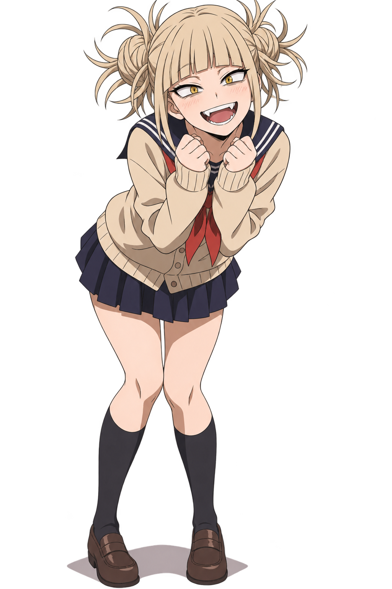

♡ Toga After School
A little companion hangout
✦ 0 stars
♥ 10 friendship


Himiko Toga ✦
✦ Mood: Curious
Heeey! You're here! So, what should we talk about today?
Friendship level 1
Fan-made, offline, single-player • Progress saves on this device
✦ Outfit Closet
Earn stars by talking and doing activities. Outfits are permanent unlocks, with two matching illustrated poses each. New outfit art appears automatically when its PNG files are placed beside this HTML; until then, the school art is shown as a preview.